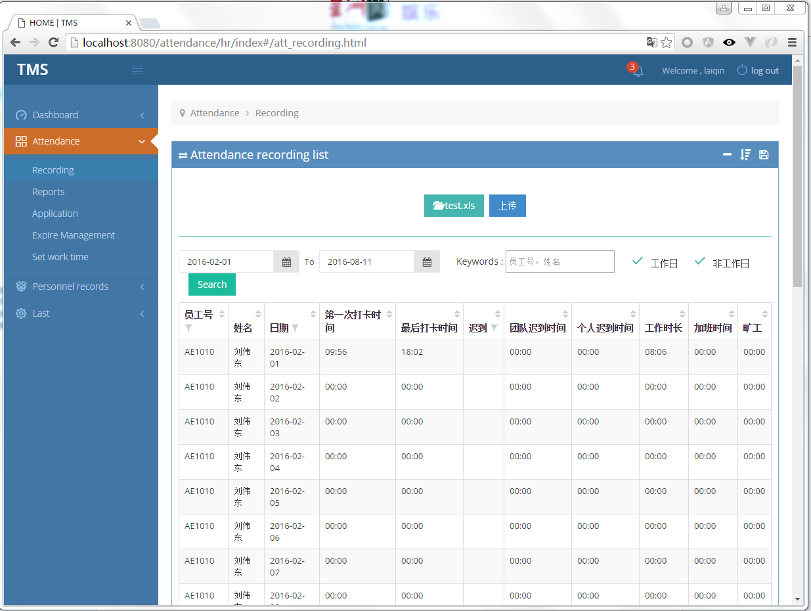

考勤系统¶
需求¶
现在公司的考勤统计，请假等都需要hr手动进行整理。所以迫切需要一个考勤系统，需求大概有以下几点。
- 假期相关。员工可以在公司企业号上请假，查询自己的假期情况。领导在企业号上审批。
- 考勤相关。员工可以在企业号上查看自己的考勤统计。
- hr在pc端管理后台，导入打卡机记录，导出数据等。
- 考勤系统作为原TMS(员工管理系统)的一个子模块。
截图
过程描述¶
Hr看到微信在年会系统中的表现还不错，借着东风，想要把 企业号 运用到员工请假管理上来。公司考勤制度非常复杂，而且Hr需求经常变化，使得我的算法代码经常变动和优化。而考勤请假的算法耦合度很大，往往牵一发而动全身。纠结痛苦过后，终于体会到了自动测试的重要性。对Django的自动化测试框架的使用，使我不再惧怕重构和需求变化。
在这个系统中，我尝试了完全的前后端分离。借助Angularjs的威力可以使得前端代码拥有独自运行的能力，尽管如此，代码冗余度太大，以后开发，我不会采用这种方式。